Cocos2d-x 消灭星星
前言
将很久以前写的教程梳理梳理
原文
环境：
- Cocos2d-x 3.4
- VS2012
一、游戏场景 & 选中星星
星星类
1 | /* 初始化 */ |
GameDefine文件，存储游戏内的一些常量设定
1 | // 定义屏幕宽高，这与所做的图片有关 |
游戏场景，用一个二维数组来存储星星个体，通过plist文件加载图集
1 | // 加载plist和png |
初始化地图方法 & 创建星星方法
1 | // 初始化地图 |
执行一下，场景显示完毕
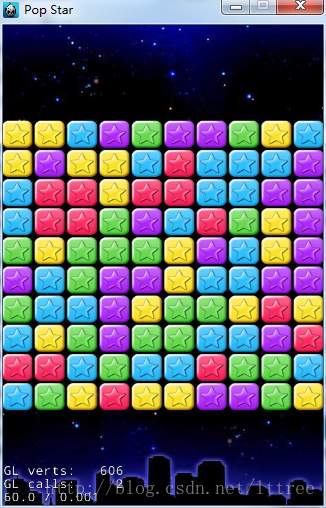
接下来，处理选中星星，先是触摸事件的添加
1 | // GameScene.cpp init函数 |
当触摸的时候，逻辑如下：当选中一个星星时，要让它和四个方向上同色的星星都处于高亮状态。
可以使用一个搜索算法实现
- 让当前星星处于高亮状态
- 将当前星星分别与和四个方向上星星进行颜色比较
- 若相同，将该星星坐标扔进函数
- 若不同，则跳过
当然，要记得设置标记数组，避免遍历过的星星再次遍历。
1 | // 触摸事件 |
下面mapR数组就是标记数组
1 | int GameScene::waitPop(int row , int col) |
提取设置一些工具函数，方便处理
1 | // 根据行列，获取坐标值 |
1 | // 根据触摸点，判断地图上的星星位置 |
效果如下
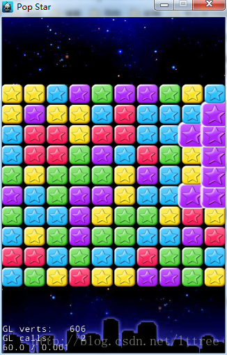
二、消除逻辑
处于高亮状态下的星星，再次被点击时的消除逻辑
1 | // 触摸事件 |
在所点击的星星非空时，判断星星是否为高亮状态，若不是，则初始化标记数组，将所有星星显示状态恢复为普通。
注意，此处所有星星的显示状态中，要把消除掉的过滤掉。
然后，是消除星星的方法
1 | void GameScene::deleteStar( void ) |
初始化标记数组，可用memset函数
1 | GameScene::GameScene() |
看一下消除后的效果（本来想用GIF，但是工具出了点问题，简单看个图片吧）
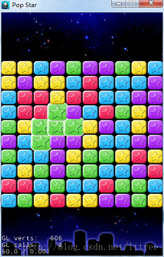
星星已经消除成功，接下来是消除后的整合处理。
思路：
- 向下归拢，按列为单位，每列中从下往上遍历
- 遍历到第一个为空对象，将该对象上方第一个不为空对象，落下来，不断向上遍历到最后
- 向左归拢，依旧按列为单位，先判断每列第一行是否为空
- 遍历到第一个为空对象，将该对象右方第一个不为空对象，移过来，不断向右遍历到最后
1 | void GameScene::adjustStar( ) |
效果展示
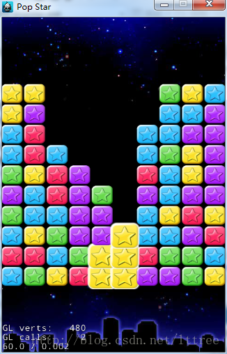
最后，判断游戏是否结束
思路：
- 由于数组不大，直接遍历即可
- 将本对象与上下左右四个方向上对象比较
- 如果有同颜色，直接返回false（表示 未结束）
- 如果无同颜色，返回true（表示 结束）
1 | bool GameScene::isFinish( ) |
最后效果
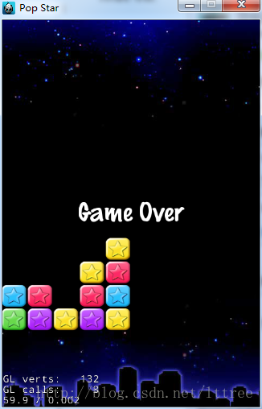
三、特效
爆炸特效
在星星消除后，加一些爆炸的粒子特效
1 | void starSpecialEffect(Star* sta,Point position,Node* node,int staNum) |
效果如下
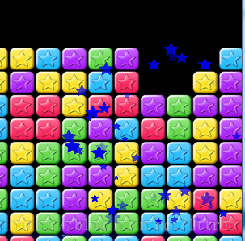
音乐音效
此处用UserDefault存储开关，此处并没有分开处理，而是一个开关控制。
背景音乐，需要重载虚函数
1 | // 场景加载完成后进行 |
添加方法
1 | void WelcomeScene::onEnterTransitionDidFinish() |
漂浮文字
1 | FloatWord* FloatWord::create( const std::string& word,const int fontSize,Vec2 begin ) |
1 | void FloatWord::floatInOut(const float speed,const float delayTime,std::function<void()> callback){ |
添加后效果：
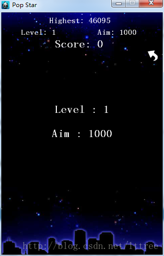
Combo特效 & 最终星星消除
首先是combo特效，每次消除的时候，判断消除的个数是否满足combo条件
1 | void comboEffect(int num,Node* node){ |
最后星星消除，流程如下
- 判断此关卡结束（没有可以消除的星星），然后将全局的关卡结束变量设置为true，获得剩余星星的数量，如果剩余星星数量大于10则设置为10个（因为一个个消除的效果，最多10个）
- 在update函数中（每一帧都会调用），会判断关卡是否结束；若结束，调用消除函数，10个以内，每消除一个都会返回，不会继续消除，而且记录消除时间，消除一次后一定时间间隔再进行下一次消除
- 消除完10个（或者小于10个）以后，不会再返回，会一次性将剩余星星消除完毕，将关卡结束变量设置为false
1 | if( isFinish() ) { |
update函数
1 | void GameScene::update( float dt ) |
消除最终星星函数
1 | void GameScene::popFinishStar( int n ) |
各种combo效果
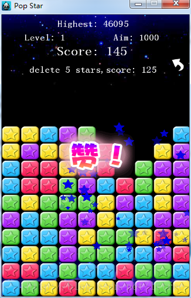
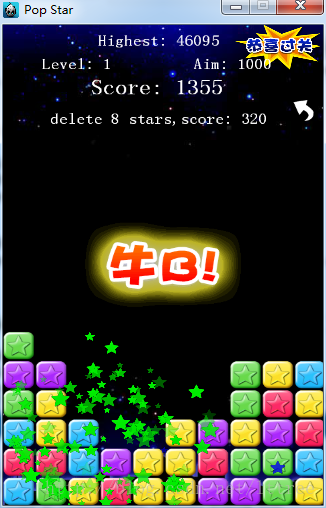
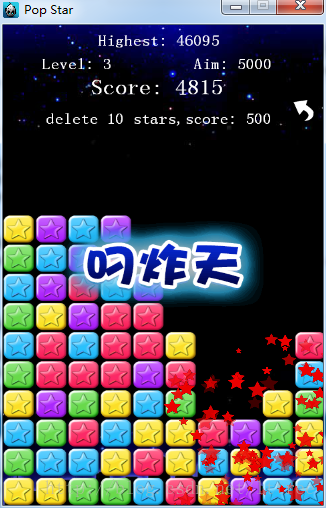
最高分记录
依旧用UserDefault存储
1 | if( userDefault->getIntegerForKey("HightScore") < _score ) |
场景的存储用了push和pop，
在主界面定义一个变量，来判断是否可以继续，
刚进入主界面时，场景栈是没有场景存储的，此时点击继续游戏就会退出游戏，所以要在场景栈没有场景时，不允许点击继续游戏按钮，
这个变量，在从游戏界面跳转到主界面（通过返回函数跳转）时，会设置为true，就是可以点击。
消除星星Hint
当消除几个星星，都要有提示，加了多少分。
游戏结束，如果剩余星星数小于10个，还会有额外加分。
星星消除逻辑
一个等差数列，第一个星星5分，第二个15分，第三个25分（首项为5，公差为10）
当消除n个星星
1
n*5 + n*(n-1) * 10 / 2
剩余星星数量，所获得的额外分数，则通过数组，放在GameDefine头文件
1 | // 剩余星星所奖励的分数 |
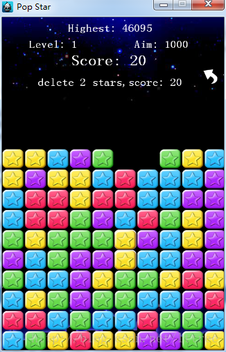
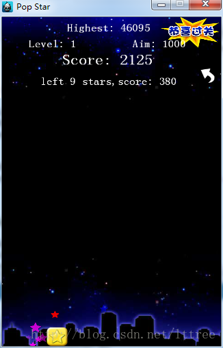
资料